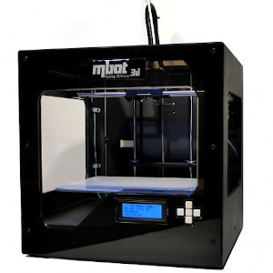

3D printing is touted as the new revolution in manufacturing and will soon surpass all methods of product development. Unfortunately, this is not true.
It is revolutionary, in the fact that it allows manufacturing to be placed in the hands of the common people, however, it will not surpass the manufacturing techniques in place.
Here are some of its advantages:
However, it does not come without its disadvantages such as:
- Almost anything or any object can be printed so long as you can draw
or model it(Hence, why we learnt Fusion 360)
- Also, items that are not normally created using using subtractive manufacturing,
can be 3D printed
| Printer | Ultimaker 2+ | Cubicon Style 3DP-2105 | MBot 3D Grid 4 |
|---|---|---|---|
| Examples |  |
 | |
| Object Size | 210x210x205 mm | 150x150x150 mm | 235x210x190 mm |
| Filament Diameter | 2.85mm | 1.75mm | 1.75mm |
| Type | Open filament | Open filament | Open filament |
The 3D printing process can be broken down as follows:
- Creating a usable 3D design- Converting the design into a 3D representable file (.STL)
- Slicing the 3D representable file into layers
- Converting the layers into instructions for the 3D printer (gcode)
- The 3D printer creates the 3D object.
The 3D Printing Process is a Digital Fabrication process. We start with a digital
design and convert it to a format which the 3D printer can implement.
The digital process begins with a design of a 3D model, which can be obtained by:
- Designing with CAD software (e.g. Fusion 360)
- Curated from archives (e.g. Thingiverse, My Minifactory or other libraries)
In using CAD, we develop a 3D model in the application of choice, we need to find a common
technique of representing this model. The two common methods are:
STL (Standard Tesselaltion Language)
OBJ
Now, we are ready to slice our STL file:
- Slicing cuts the object into layers.
- Each layer is a printable level in the X-Y coordinates.
- The 3D Printer head moves up one layer at-a-time in the Z-axis.
I will be mainly focusing on the ultimaker cura software which can be applied
to the 3 above printers.
Feel free to download it if you have not
The main job of the slicer software is to convert the STL file into layers, determine the print characteristic of each layer* convert the print characteristics of the layer into a language understanable by the 3D Printer (usually gcode)
The slicer software will usually have the configuration code for a particular set of 3D Printer(s). The machine-readable code is saved/transferred to the 3D Printer using a SDCard/Thumbdrive or by network to perform the actual printing process.
These are some of the common characteristics you can adjust:
However, I will only be covering 4 of the more important characteristics:
Feel free to experiment with the different settings:) .
Different settings can increase or decrease the time taken to print your object.


{kind=link}
{kind=link}
{kind=link}
{kind=link}